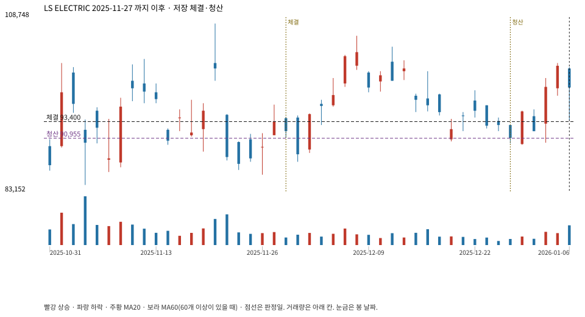

계좌를 다시 돌리지 않았다. 아래는 저장된 주문·체결·청산·비용·손익이다.

{
"case_id": "f9f072926594b3fd",
"status": "closed",
"trade": {
"symbol": "010120.KS",
"signal_date": "2025-11-27",
"quantity": 107,
"entry": 93400,
"stop": 84217,
"target": 107800,
"planned_risk": 1006087.1228905002,
"reserved_cash": 10003793.799999999,
"fill": {
"date": "2025-11-28",
"price": 93400,
"fee": 9993.800000000001
},
"exit": {
"date": "2025-12-26",
"price": 90954.5,
"reason": "time",
"net_pnl": -281394.431499999,
"ambiguous_bar": false
}
},
"cost": "research fee 10bp each side, slippage 5bp; amounts below are the stored ledger, not a new run",
"chart": "c\/f9f072926594b3fd.svg"
}